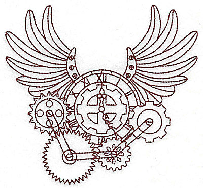

Cyclus Publications¶
{kind=link}
Cyclus in the Literature¶
The following are notable publications regarding Cyclus:
- Matthew Gidden, Robert Carlsen, Kathryn Huff, and Paul Wilson. An agent-based framework for fuel cycle simulation with recycling. In Proceedings of GLOBAL. Salt Lake City, UT, United States, Sep 2013.
- Matthew Gidden, Robert Carlsen, Arrielle Opotowsky, Olzhas Rakhimov, Anthony Scopatz, and Paul Wilson. Agent-based dynamic resource exchange in Cyclus. In Proceedings of PHYSOR. Kyoto, Japan, Sep 2014.
- Matthew Gidden, Paul Wilson, Kathryn Huff, and Robert Carlsen. Once-through benchmarks with Cyclus, a modular, open-source fuel cycle simulator. In Proceedings of the 2012 ANS Winter Conference. San Diego, CA, Nov 2012.
- Matthew Gidden, Paul Wilson, and Anthony Scopatz. Developing standardized, open benchmarks and a corresponding specification language for the simulation of dynamic fuel cycles. In Proceedings of the 2013 ANS Summer Conference. Atlanta, GA, United States, Jun 2013.
- Kathryn Huff. Cyclus fuel cycle simulation capabilities with the Cyder disposal system model. In Proceedings of GLOBAL. Salt Lake City, UT, United States, Sep 2013.
- Kathryn Huff, Paul Wilson, and Matthew Gidden. Open architecture and modular paradigm of Cyclus, a fuel cycle simulation code. In Transactions of the American Nuclear Society, volume 104, 183. 2011.
- Kathryn D. Huff. An Integrated Used Fuel Disposition and Generic Repository Model for Fuel Cycle Analysis. PhD thesis, THE UNIVERSITY OF WISCONSIN - MADISON, October 2013.
- Anthony Scopatz. A dynamic, dependent type system for nuclear fuel cycle code generation. In Proceedings of GLOBAL. Salt Lake City, UT, 2013.
Citing Cyclus¶
Here are entries for citing Cyclus and Cycamore in your publications:
- Robert W. Carlsen, Matthew Gidden, Kathryn Huff, Arrielle C. Opotowsky, Olzhas Rakhimov, Anthony M. Scopatz, Zach Welch, and Paul Wilson. Cyclus v1.0.0. figshare, 06 2014.
- Robert W. Carlsen, Matthew Gidden, Kathryn Huff, Arrielle C. Opotowsky, Olzhas Rakhimov, Anthony M. Scopatz, and Paul Wilson. Cycamore v1.0.0. figshare, 06 2014.

Previous page
Useful Pages
- User Guide
- Archetype Developer Guide
- Cyclus API Documentation
- Cycamore API Documentation
- Glossary
- Join the Cyclus Users mailing list.
- Join the Cyclus Developers mailing list.
Get Cyclus
Current version: 1.0.0
Install:
$ conda install cyclus cycamoreAcknowledgements
The Cyclus project has received support from:In addition, some of the students working on Cyclus have received support from: